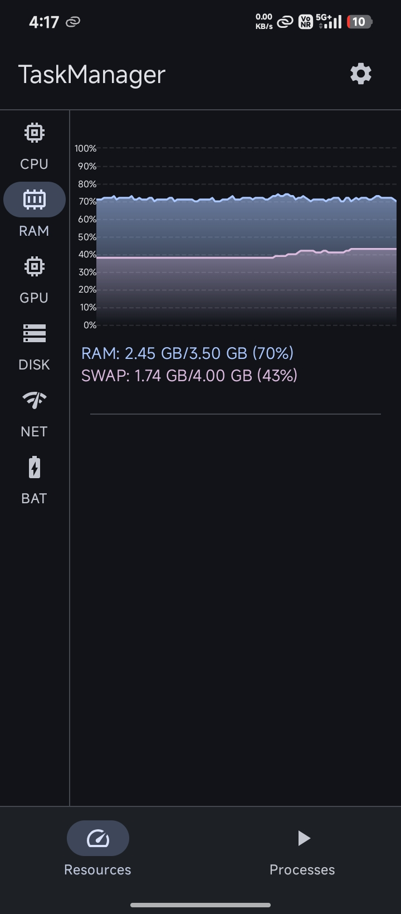
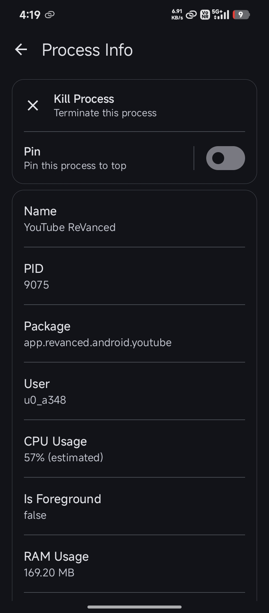

关于 TaskManager 的快问快答——安卓手机"体检仪"到底值不值得装
整理一篇关于 TaskManager 的快问快答，覆盖定位、安装、核心用法、避坑点和同类对比，帮你三两分钟搞懂这款安卓开源系统监控工具。
整理一篇关于 TaskManager 的快问快答——这款安卓端的开源任务管理和系统监控工具，好多人听过但没真正用起来。以下八个问题，基本把它讲透了。
TaskManager 到底是个啥？
一句话：把 Linux 桌面上大家熟悉的 GNOME System Monitor 那套实时资源曲线和进程列表，搬到了安卓手机上——你可以从TaskManager官网看到更完整的介绍，开源、不搞会员制。
它的能力边界非常清晰，全部围绕"看见资源 → 找到真凶 → 动手处理"这条链路：CPU、RAM、GPU、磁盘 IO、网络、电池六类资源的实时曲线、进程级详情（PID、归属应用、优先级、线程数、启动时间、可执行路径），以及结束进程的操作。

谁需要装这个？
手机经常发烫卡顿、后台挂不住应用、电池掉电莫名其妙快的人，值得装。
日常使用中你可能有过这些困惑：明明没开几个应用，CPU 却飙到 80%；手机放着不动，电池一小时掉了 10%；切回来微信要重新加载。TaskManager 就是帮你把这些"黑盒"变成可读的数据——谁在吃内存、谁在霸 CPU、谁在偷偷扫存储，一眼就看到。
怎么装？听说还要装 Shizuku？
对，Shizuku 是跑通 TaskManager 的前提。这两个是配套关系，TaskManager 本身没有系统级权限，需要 Shizuku 授权后才能读取进程信息和执行结束操作。
Shizuku 的安装流程不复杂，用 USB 调试或无线调试启动一次就行，之后挂后台保持运行。普通安卓应用的进程管理 Shizuku 授权即可搞定；如果要操作 Linux 进程、调整优先级这些更底层的动作，需要 root 方式启动 Shizuku。没有系统级权限时 TaskManager 打开就是空的，这不是故障，是它的权限模型决定的。安装包从官方下载拿就行。
核心功能有哪些？六块面板分别干嘛？
六类资源面板各有侧重：
- CPU：进程列表默认按占用率降序排，最顶那条就是此刻最忙的进程。看持续时间比看瞬时值重要——Top 1 冲一下然后掉回去，可能只是冷启动加载；长期霸榜 15% 以上的才是真凶。
- RAM：用 PSS 排序而不是 RSS。PSS 会把共享内存按比例分摊，更能反映单个应用的真实独占成本。微信和 QQ 都用 ART 虚拟机，RSS 会把那份共享内存全算给每一个，加起来就虚高了。
- GPU：看帧率和占用曲线，定位游戏掉帧、图形渲染卡顿的问题。
- 磁盘 IO：实时读写速率曲线，能抓到待机时偷偷扫存储的应用、挖矿木马之类的异常。
- 网络：Wi-Fi 和移动数据的实时上下行速度。
- 电池：耗电曲线、SoC 温度、电池健康度。
进程详情页能看到 PID、线程数、Nice 优先级这些系统层面的信息，线程数正常应用一般在 10~50 之间，几百个就得警惕线程泄漏或广告 SDK 在搞事情。
内存里 PSS 和 RSS 为啥不一样？
这个问题挺多人纠结的。简单说：RSS 把共享库的内存全算给每个进程，PSS 按比例分摊。
举个例子，微信和 QQ 都加载了 ART 虚拟机的共享库。用 RSS 看，微信 400MB、QQ 也 400MB，加起来 800MB 但物理内存实际才用了 600MB——因为那 200MB 是共享的。PSS 就没这个问题，微信 PSS 300MB、QQ 250MB，加起来更接近真实物理占用。
TaskManager 的进程详情和 RAM 面板统一用 PSS 排序，就是为了让你看到"谁真的在独占内存"。频繁触发 OOM Killer 的时候，先看 PSS 前几名有没有异常持续顶在前排的。更细致的排查思路可以去TaskManager文档里翻。
能直接杀进程解决卡顿吗？
能，但别把它当根治手段。杀进程只解决当前占用，推送服务、定时任务会把应用重新拉起——不让它自己回来才是治本。
正确的流程是：先用 TaskManager 找到持续霸榜的进程，Force Stop 结束它，然后去系统设置里把这个应用的"后台启动"和"自启动"关掉。两步配合，否则你杀完它又自己起来，卡还是卡。
还有一条：系统进程不要随便杀。TaskManager 在非 root 模式下本来也结束不了系统进程，这是设计好的。认出包名归属再动手，com.android.*、com.google.*、厂商定制前缀（com.miui.*、com.huawei.* 之类的）一律只看不杀。
和系统自带的、同类工具比怎么样？
安卓自带的"开发者选项 → 正在运行的服务"只显示内存占用，没有 CPU / GPU / 电池曲线，也没有进程优先级和线程数这些细节。TaskManager 给的是一张完整的账本。
市面上其他安卓任务管理器也不少，但 TaskManager 有三个明显优势：一是开源透明，Apache-2.0 许可源码公开，可以自行审阅和构建；二是不搞付费解锁，GitHub 版和 Google Play 版功能一致，没有 Pro 版墙；三是持续更新，2026 年还在迭代，最新 v1.5.2 增加了巴西葡萄牙语和中文翻译。
Material Design 三套主题（浅色、深色、Android 12+ 动态色）也比同类工具的界面好看不少。
它不能做什么？有哪些坑？
TaskManager 的边界要搞清楚。它不能绕过 Shizuku / Root 权限模型、不能阻止应用自动重启、不能修改系统设置——不搞 governor 切换、不搞超频降压，只做监控和进程管理。
还有一个常见误解：很多人以为杀进程就能让手机变快。实际上安卓的后台机制和桌面 Linux 不同，杀完再冷启动反而更吃资源。TaskManager 的真正价值是帮你看到，然后让你做出判断——是这个应用确实在后台偷偷搞事情，还是系统正常行为被你误判了。

最后一句
手机用了一两年开始莫名卡、莫名耗电，装一个 TaskManager + Shizuku 花不了三分钟，至少能搞清楚"到底是谁在搞事情"——这条信息本身就值。系统工具类应用不用追求多，留一个看得懂数据的就行。
这套资料在三个仓库都能拿到，GitHub是主仓库，Gitee和GitCode也同步了完整文档和源码，国内访问哪个快就用哪个。